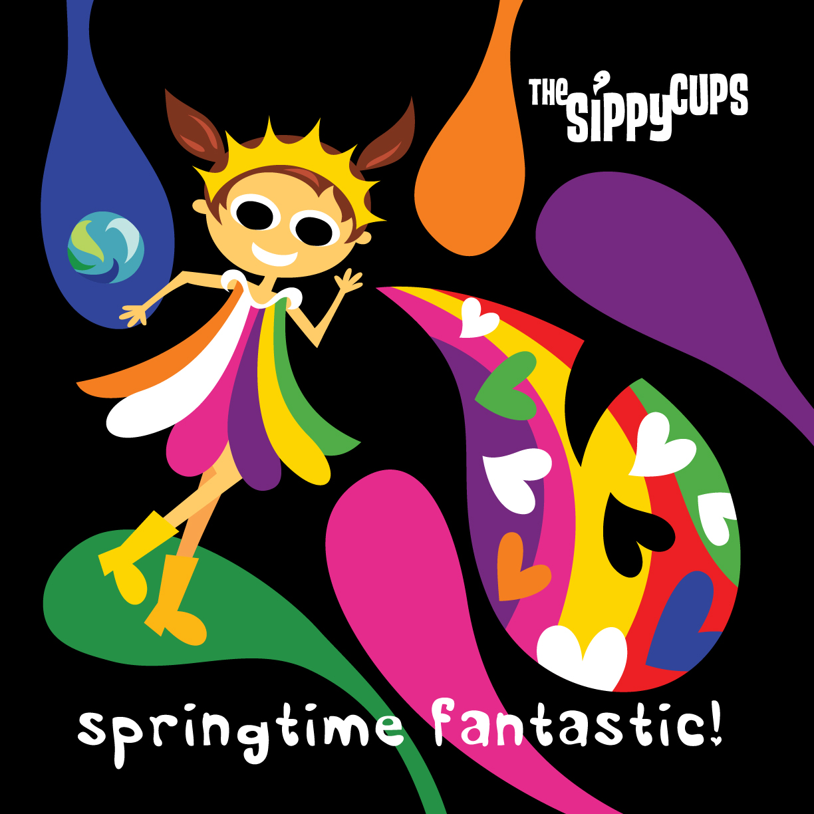

<!DOCTYPE html>

<html>
    <head>
        <title>Rudy Trubitt - Music</title>
        <link href="./css/style.css" type="text/css" rel="stylesheet"/>
    </head>
</html>

</html><body>
<h1>Music</h1>
<p>For the last 10 years, I've worked in the Family Music genre. </p>
    
<p>I spent 5 years touring the US with the psychedelic-rock-and-roll-circus that was The Sippy Cups. In addition to playing in the band, I was a song writer and technical director. In that capacity, I advanced close to a hundred shows including Lollapolooza, Austin City Limits, Central Park Summer Stage and Hard Rock Cafes in multiple cities. I arranged our backline rentals, hired a rigger for our aerialist and provided show notes and direction for local sound and lighting techs. I was also producer on much of the band's catalog, which includes three albums, two EPs and a concert DVD filmed at The Great American Music Hall in San Francisco.</p>

<p>More recently, I have been doing solo performances and am the host and promoter of The Patchwork Series at The Freight & Salvage Coffee House in Berkeley CA. My song Little Chicken (listen below) hit #1 on the Sirius/XM Kid's Place Live channel!</p>


<p>Little Chicken hit #1 on Sirius/XM Kid's Place Live!</p>

<br>
<audio controls> 
        <source src="./sound/LittleChicken-RudyTrubitt.mp3" 
        type="audio/mp3"></audio>

<p>Springtime Fantastic by The Sippy Cups. Co-written with Mark Verlander, who also did our amazing artwork.</p>

<br>

<audio controls> 
    <source src="./sound/SpringtimeFantastic-TheSippyCups.mp3" type="audio/mp3"></audio>
    <!-- https://html5tutorial.info/html5-audio.php for more about using audio element-->
</body>